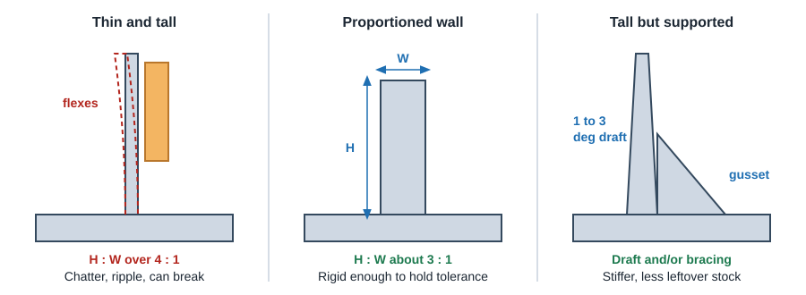
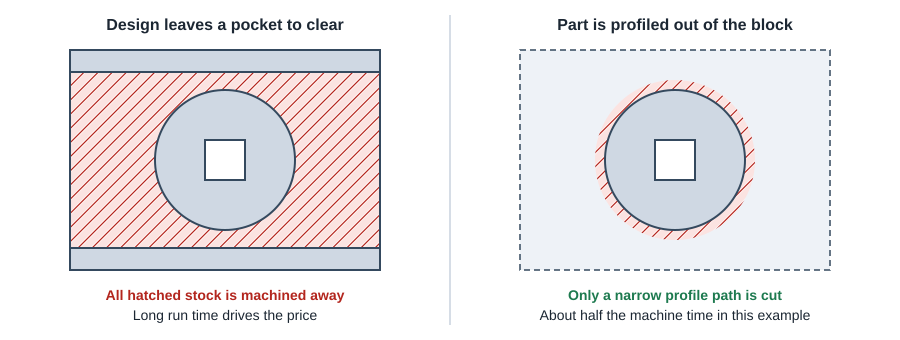
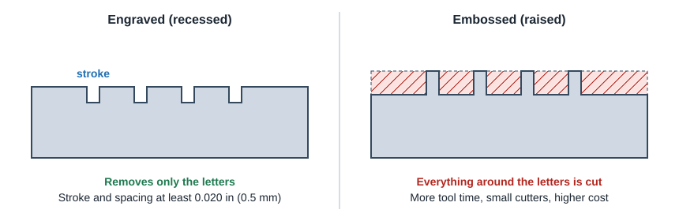

CNC Machining
Walls, Features & Text
Cutters and parts both deflect. Keep walls thick enough for their height, avoid tall skinny features, and skip machining that does not add function: decorative edge fillets, raised text and pockets cut only to remove material.
0.030 inMin wall, metals (0.8 mm)
0.060 inMin wall, plastics (1.5 mm)
3 : 1Good wall height to thickness
0.020 inMin text stroke and spacing (0.5 mm)
Wall thickness
| Guideline | Value | Source / note |
|---|---|---|
| Minimum wall, metal parts | 0.030 in (0.76 mm); thicker is better | Network shop guideline. A cost guide gives 0.8 mm. |
| Minimum wall, plastic parts | 0.060 in (1.5 mm) | Plastics flex and warp after cutting |
| Absolute minimum feature (automated shop) | 0.020 in (0.5 mm) anywhere on the part | Flagged as thin; may break, flex or warp |
| Minimum nominal part thickness (automated shop) | 0.040 in (1.0 mm) | Below this the part cannot be held well |
| Wall height to thickness | About 3 : 1 is comfortable; keep under 4 : 1 | Taller walls chatter and leave ripples |
| Maximum wall / feature height | About 2 in (51 mm) with standard tooling | Taller walls need to be thicker |

- Add 1 to 3 degrees of draft to tall walls when function allows. The base gets thicker and stiffer, and less stock is left behind.
- Brace tall walls with gussets or tie them into another wall.
- Do not go overboard: very thick walls just mean more material to remove. Size walls for function plus rigidity, not maximum mass.
- Plastic walls often move after machining as internal stress is released. Leave extra thickness and avoid big one-sided material removal.
Small and slender features
- Aspect ratio: keep standing pins, ribs and bosses under about 4 : 1 height to width.
- Connect small features to a wall or add bracing so they do not vibrate under the cutter.
- Deep slots: keep depth under about 6x the slot width, and leave at least 0.020 in (0.5 mm) of wall next to them.
- Holes near walls and edges: keep at least 0.030 in (0.8 mm) of material in metal parts, about double that in plastics.
- Avoid partial holes breaking out of an edge. If you must, keep at least 75% of the hole inside the part.
- Heat-sink style fins are among the most expensive features to cut. Check if an extrusion or a purchased heat sink would work.
Avoid machining that adds no function

- Run time drives price. If material only has to go away, ask whether the design can let it fall away as an offcut instead of being pocketed into chips.
- Keep the outside shape close to its bounding box. Material that never has to be cut costs nothing to machine.
- If a part is very complex, consider splitting it into two simpler parts joined with fasteners or pins.
Edge breaks, chamfers and fillets
Do
- Use a 45° chamfer for edge breaks; one chamfer tool pass is fast.
- Add a note like "break all sharp edges 0.005 to 0.015 in" and let the shop deburr.
- Deburr prototypes yourself with a file or deburring tool if cost matters.
Avoid
- Outside edge fillets on every edge. Each needs a ball or corner-rounding tool and 3D passes.
- Mixed chamfer and fillet sizes across a part.
- Fillets added only because the CAD tool made them easy.
Undercuts
- An undercut is any surface the cutter cannot see from straight above (for the current setup). They are made with T-slot, keyseat or dovetail cutters or a lollipop (ball) cutter.
- Size undercut slot widths and depths to standard cutter sizes (for example 1/8, 3/16, 1/4 in wide). Non-standard sizes need custom tools.
- Keep undercuts shallow and near an open face where the cutter's shank can reach. The cutter disc is supported only by a thin neck.
- Leave clearance above and below the undercut so the cutter can enter and exit.
- If the undercut is for a retaining ring or O-ring, check whether a turned groove (lathe) is possible instead.
Text, logos and part marking

- Engrave, do not emboss. Recessed text removes only the letter strokes.
- Size: stroke width and character spacing at least 0.020 in (0.5 mm). Use 20 point or larger sans serif fonts (Arial, Helvetica, Verdana).
- Depth: shallow is enough; about 0.3 mm (0.012 in) is common. One guide suggests Arial Rounded 14 pt in soft metals and plastics, 22 pt in hard metals.
- Consider laser marking or etching for part numbers and logos. It is cheaper, crisper and scales better with quantity. Provide vector artwork (DXF, AI) for logos.
- On turned parts, raised text can work, but the same 0.020 in minimum applies.
- Leave text off prototypes unless it is needed for the test; add it when the part goes to molding or production marking.
Sources
Xometry CNC Machining Design Guide (wall minimums, hole spacing, text) · ProtoLabs CNC milling design guidelines · ProtoLabs: complex features on machined parts · ProtoLabs Definitive Guide to CNC Machining (walls, draft, unnecessary machining).